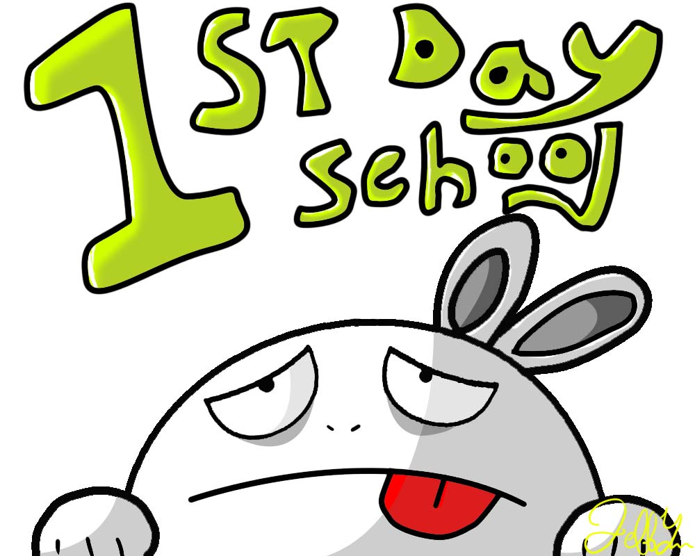

Chun Han (Jeff) Yu
-
chunhany@uw.edu
-
follow me on Instagram
Education
- University of Washington Communication Major (2011~2014)
Volunteer Experience
- Service team to Mexico, house building service for the homeless
(2007, 2008)
- City Community Volunteer Service for Veterans of Foreign Wars, tree
planting community service in local community, etc (2008, 2009,
2010)
- Personally raised over $1000 to support a sister school in Congo (2008,
2009, 2010
- Involved in fundraising activity for the Leukemia & Lymphoma
Society (2008, 2009, 2010)
- Volunteer in Taiwanese Overseas Student Association Freshmen
Orientation (2013)
- Volunteer at TOSA night Market (2013)
- Service Learning Program at Seattle Roots Homeless Shelter (2013)
Course I have taken
|
Autumn |
Winter |
Spring |
| 2011 |
ESS101 |
CSE142 |
ENGL131 |
| 2012 |
INFO200 |
SOC101 |
INFO100 |
Additional Skills
Fluent in Chinese (Mandarin), Taiwanese and English
Photoshop and Microsoft Office